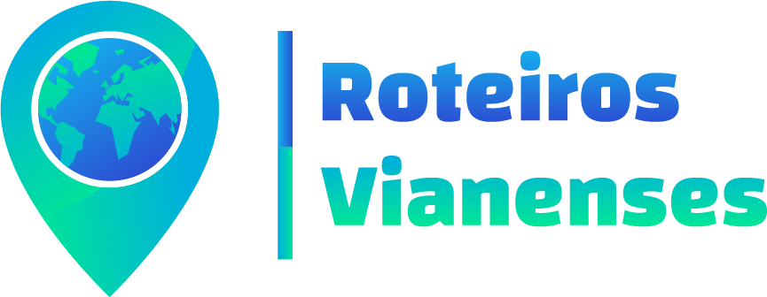

<ion-header [translucent]="true">
  <ion-toolbar>
    <ul class="lista-header">
      <!-- <li></li>
      <li>Roteiros Vianenses</li> -->
      <ion-icon root (click)="setOpen_definicoes(true)" name="settings-outline" class="icon-definicoes"></ion-icon>
      <!-- <li></li> -->
    </ul>
  </ion-toolbar>

  <!-- <ion-button color="dark" id="open-modal" class="habilidades-section" expand="block"
    (click)="setOpen_habilidades(true)">
    <ion-icon class="icon1" name="construct-sharp"></ion-icon>
    <p>{{ 'Habilidades' | translate }}</p>
    <ion-icon class="icon2" name="chevron-forward-outline"></ion-icon>
  </ion-button> -->

  

  


</ion-header>

<ion-content>
  <!-- <ion-slides pager="true" [options]="slideOpts">
    <ion-slide>
      <h1>Slide 1</h1>
    </ion-slide>
    <ion-slide>
      <h1>Slide 2</h1>
    </ion-slide>
    <ion-slide>
      <h1>Slide 3</h1>
    </ion-slide>
  </ion-slides> -->

  

  <ion-modal [isOpen]="isModalOpen_definicoes">
    <ng-template>
      <ion-header>
        <ion-toolbar>
          <ion-title>Definições</ion-title>
          <ion-buttons slot="end">
            <ion-button (click)="setOpen_definicoes(false)">Fechar</ion-button>
          </ion-buttons>
        </ion-toolbar>
      </ion-header>
      <ion-content class="ion-padding">
        <ion-item lines="full">
          <ion-icon slot="start" name="moon"></ion-icon>
          <ion-label>
            Modo Escuro
          </ion-label>
          <ion-toggle id="darkmode-toggle" slot="end" (ionChange)="toggleDarkMode()"></ion-toggle>
        </ion-item>
      </ion-content>
    </ng-template>
  </ion-modal>

  <ion-button class="botao-iniciar">Iniciar Viagem</ion-button></a>
</ion-content>
